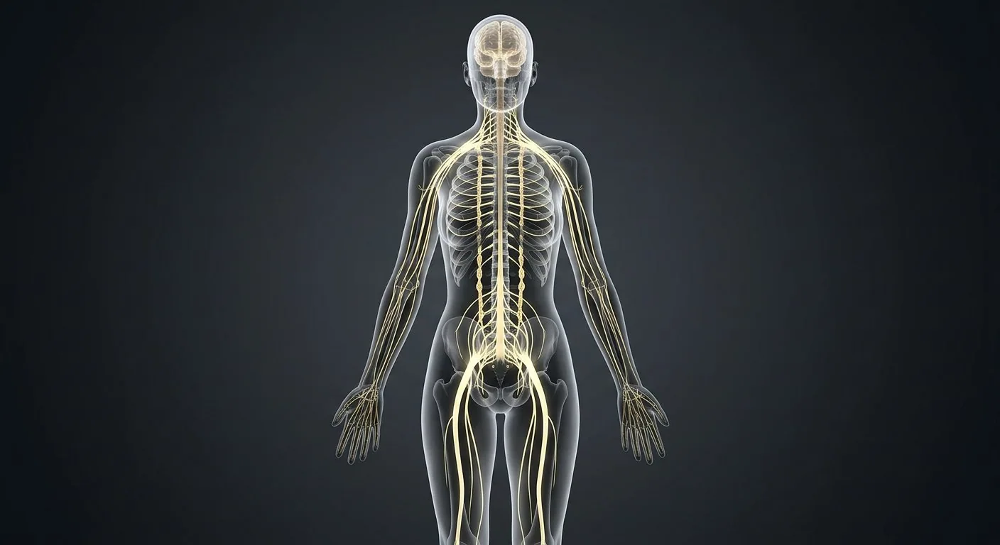
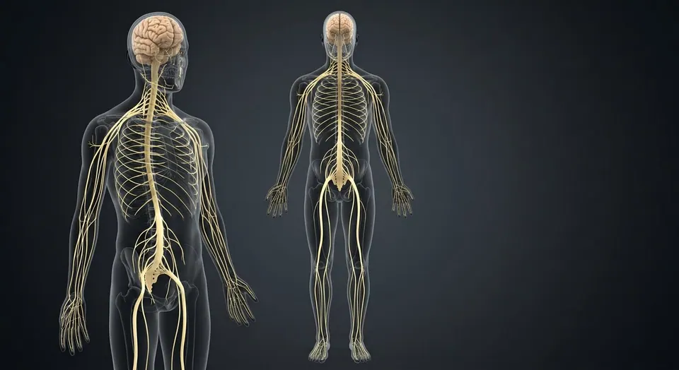
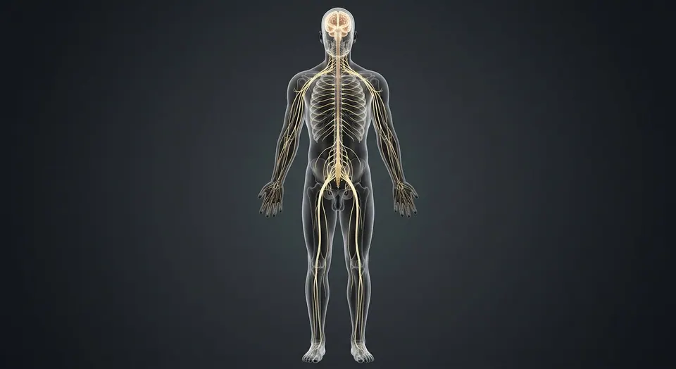

How this part of the body works
This female figure orients the shared brain, spinal and peripheral nerve plan. The additional study structures focus on nerves to the uterus, vagina, clitoris and vulva. Deep pelvic branches are not individually depicted on the full-body image.
Read the anatomy, part by part
These 12 structures describe anatomy related to the chapter’s regional illustration. Each entry separates location, function and a clinical point.
Brain
Cerebrum, cerebellum and brainstem inside the cranial vault.
What it doesIntegration, consciousness, motor planning and autonomic control.
Clinical connectionHead injury scales from concussion to diffuse axonal injury.
Spinal cord
31-segment cord from foramen magnum to L1–L2.
What it doesTwo-way tracts plus segmental reflex circuits.
Clinical connectionCord transection level predicts deficit pattern precisely.
Cervical plexus
Nerve network in the posterior triangle of the neck.
What it doesNeck muscles and skin; phrenic nerve to diaphragm.
Clinical connectionC3-4-5 keeps the diaphragm alive — injury above C4 stops breathing.
Brachial plexus
Roots-trunks-divisions-cords-branches behind the clavicle.
What it doesAll motor and sensory supply of the upper limb.
Clinical connectionErb's palsy (C5-6) from birth traction: waiter's-tip hand.
Intercostal nerves
Ventral rami running in subcostal grooves.
What it doesChest-wall muscles and segmental skin band.
Clinical connectionShingles follows one intercostal dermatome.
Lumbar plexus
Network within psoas major.
What it doesAnterior thigh and medial leg supply.
Clinical connectionFemoral nerve block anaesthetises the anterior thigh.
Sacral plexus
Plexus on the piriformis wall of the pelvis.
What it doesGluteal region, perineum and the sciatic nerve.
Clinical connectionSciatica radiates along its branches down the leg.
Sciatic nerve
Largest nerve in the body (L4–S3).
What it doesHamstrings and all muscles below the knee.
Clinical connectionWrong gluteal injection site can injure it — use upper outer quadrant.
Sympathetic trunk
Chain of ganglia from skull base to coccyx.
What it doesFight-or-flight: heart up, gut down, pupils wide.
Clinical connectionHorner's syndrome: ptosis, miosis, anhidrosis.
Vagus nerve (CN X)
Longest cranial nerve, neck to pelvis.
What it doesParasympathetic brake on heart, lungs and gut.
Clinical connectionVagal stimulation terminates SVT — the Valsalva trick.
Femoral nerve
L2–L4 branch under the inguinal ligament.
What it doesQuadriceps power and anterior-thigh sensation.
Clinical connectionLoss → buckling knee and absent knee jerk.
Dorsal root ganglion
Sensory cell-body cluster on each dorsal root.
What it doesHouses pseudounipolar sensory neurons.
Clinical connectionVaricella hides here and re-emerges as shingles.
Deeper structures and tissue layers
These 8 additional entries give anatomical context. They are deliberately not assigned a photographic pin on the regional image.
Pelvic splanchnic nerves
Parasympathetic fibers from sacral levels S2–S4 travel to pelvic autonomic plexuses.
What it doesReach bladder, rectal and reproductive pelvic organ targets.
Clinical connectionDo not confuse these autonomic fibers with somatic pudendal branches.
Inferior hypogastric plexus
Paired networks on the lateral walls of the rectum combine sympathetic and parasympathetic fibers.
What it doesDistribute autonomic pathways to pelvic organs.
Clinical connectionOperations near these plexuses can affect urinary or sexual function.
Hypogastric nerves
Descending autonomic connections between the superior and inferior hypogastric plexuses.
What it doesConvey predominantly sympathetic pathways into the pelvis.
Clinical connectionDo not equate them with the somatic pudendal nerve.
Pudendal nerve
Paired somatic S2–S4 nerve passes through the pudendal canal toward the perineum.
What it doesSupplies external genital and perineal sensation plus motor branches to sphincters.
Clinical connectionIts terminal genital branch differs between male and female anatomy.
Uterovaginal plexus
Pelvic autonomic network associated with the cervix and upper vagina.
What it doesDistributes fibers toward the uterus, cervix and upper vagina.
Clinical connectionA distinct pathway from pudendal sensory branches serving the lower vagina and vulva.
Dorsal nerve of clitoris
Terminal sensory branch of the pudendal nerve runs toward the clitoral glans.
What it doesConveys much of the clitoral somatic sensation.
Clinical connectionDistinguish it from autonomic pathways involved in erectile tissue responses.
Posterior labial nerves
Cutaneous branches of the pudendal perineal nerve enter the posterior labial region.
What it doesSupply sensation to posterior vulvar skin.
Clinical connectionAnterior labial skin has additional ilioinguinal and genitofemoral innervation.
Vaginal autonomic branches
Branches from the pelvic plexus reach the upper vaginal wall.
What it doesCarry autonomic innervation and visceral sensory pathways.
Clinical connectionThe lower vaginal opening has a larger somatic contribution from pudendal branches.
Five questions about Nervous system — female
Short answers grounded in the structures described above. Use the illustrated guide for anatomical context.
Is the female nervous system built differently from the male nervous system?
The central and most peripheral pathways share the same basic organization. A female-focused pelvic view discusses branches serving the uterus, vagina, clitoris and vulva without implying a separate female brain or spinal cord.
What carries sensation from the clitoral glans?
The dorsal nerve of the clitoris, a terminal branch of the pudendal nerve, conveys much of the somatic sensation. Autonomic nerves influence erectile tissues but should not be confused with that sensory pathway.
Which nerves supply the vulva and lower vagina?
Pudendal branches supply much of the posterior vulva and lower vaginal region. The anterior labia also receive contributions from ilioinguinal and genitofemoral branches, so a single nerve label cannot cover the entire area.
What is the uterovaginal plexus?
It is an autonomic network associated with the cervix and upper vagina that carries branches toward the uterus and upper vagina. It is anatomically distinct from the superficial pudendal branches of the perineum.
Does the full-body female nerve plate identify tiny pelvic branches?
No. The full-body plate is for orientation to larger pathways. Tiny pelvic autonomic and sensory branches are explained in study entries without pretending they can be seen or precisely localized on this image.
Related anatomy guides
Follow these connected structures and body systems in the illustrated atlas.

Nervous system — overviewOne continuous network: the brain and spinal cord compute, and 43 pairs of peripheral nerves carry orders out and reports back.↗
Nervous system — maleThe male figure with every nerve pathway highlighted — same wiring as the female page, shown on male proportions for side-by-side study.↗ Female body — anteriorA glass-body view of the female: major organs in place, with breasts, uterus and ovaries completing the picture.↗
Female body — anteriorA glass-body view of the female: major organs in place, with breasts, uterus and ovaries completing the picture.↗Further reading
General anatomy references and related source chapters for continued study. These links do not make the digital illustrations clinical images or certify every anatomical variant.
This educational page is not medical advice and has not undergone formal clinical peer review. Spotted an error? Contact the editor.
Open the realistic interactive plate, label lines, focus view and self-test.